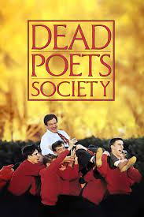

O filme aborda temas universais como a importância da expressão individual, a busca pela autenticidade, a superação de desafios e a importância da educação não convencional. Ele nos lembra que devemos questionar as normas sociais e nos encoraja a buscar nossas paixões, mesmo quando enfrentamos resistência ou adversidades.
"Interestelar" é um filme que cativa e encanta muitas pessoas por diversas razões. A narrativa do filme é intrigante e emocionante. A história envolve viagens espaciais, exploração do desconhecido e dilemas científicos que nos fazem refletir sobre o nosso lugar no universo.
O que torna esse filme tão especial é a maneira como retrata temas profundos, como amor, amizade, superação e destino, de uma forma leve e cativante.